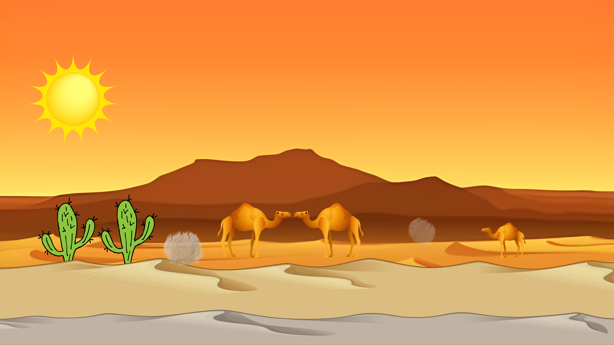
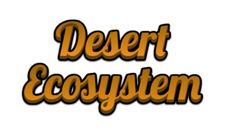

Desert Ecosystem
is the driest ecosystem of the earth and this is the reason it has less vegetation and less diversity of life. It is one of the parts of the terrestrial ecosystem. The plants and animals of the desert ecosystem have mastered the art of survival in harsh conditions. A desert ecosystem is basically devoid of any rainfall or precipitation.